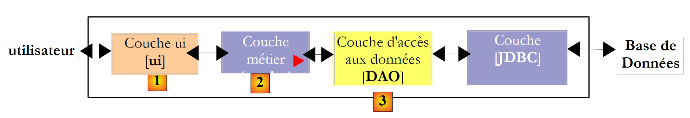
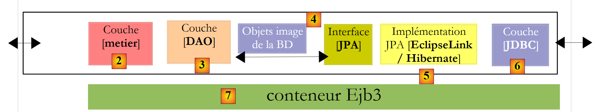

2. Schichtenbasierte Architektur einer Java-Anwendung
Eine Java-Anwendung ist häufig in Schichten unterteilt, von denen jede eine genau definierte Rolle hat. Betrachten wir eine gängige Architektur, nämlich die dreischichtige Architektur:
 |
- Die Schicht [1], hier [ui] (User Interface) genannt, ist die Schicht, die über eine grafische Swing-Oberfläche, eine Konsolenoberfläche oder eine Weboberfläche mit dem Benutzer kommuniziert. Ihre Aufgabe besteht darin, vom Benutzer stammende Daten an die Schicht [2] weiterzuleiten oder dem Benutzer Daten anzuzeigen, die von der Schicht [2] bereitgestellt werden.
- Die Schicht [2], hier als [metier] bezeichnet, ist die Schicht, die die sogenannten Geschäftsregeln (c.a.d) anwendet. die anwendungsspezifische Logik, ohne sich darum zu kümmern, woher die ihr übergebenen Daten stammen oder wohin die von ihr erzeugten Ergebnisse gelangen.
- Die Schicht [3], hier als [DAO] (Data Access Object) bezeichnet, ist die Schicht, die der Schicht [2] vorab gespeicherte Daten (Dateien, Datenbanken, ...) zur Verfügung stellt und einige der von der Schicht [2] gelieferten Ergebnisse speichert.
Es gibt verschiedene Möglichkeiten, die Schicht [DAO] zu implementieren. Betrachten wir einige davon:
 |
Die oben genannte Schicht [JDBC] ist die in Java verwendete Standardschicht für den Zugriff auf Datenbanken. Sie isoliert die Schicht [DAO] von der Schicht SGBD, die die Datenbank verwaltet. Theoretisch ist es möglich, die SGBD zu ändern, ohne den Code der Schicht [DAO] zu ändern. Trotz dieses Vorteils weist die API JDBC einige Nachteile auf:
- Alle Operationen auf der Schicht SGBD können die kontrollierte Ausnahme (checked) SQLException auslösen. Dies zwingt den aufrufenden Code (hier die Schicht [DAO]), diese mit try/catch-Anweisungen zu umschließen, was den Code ziemlich schwerfällig macht.
- Die Schicht [DAO] ist nicht vollständig unabhängig von SGBD. Diese verfügt beispielsweise über proprietäre Methoden zur automatischen Generierung von Primärschlüsselwerten, die die Schicht [DAO] nicht ignorieren kann. Beim Einfügen eines Datensatzes gilt daher:
- Bei Oracle muss die Schicht [DAO] zunächst einen Wert für den Primärschlüssel des Datensatzes abrufen und diesen dann einfügen.
- Bei SQL Server fügt die Schicht [DAO] den Datensatz ein, dem von der Schicht SGBD automatisch ein Primärschlüsselwert zugewiesen wird, der an die Schicht [DAO] übergeben wird.
Diese Unterschiede lassen sich durch den Einsatz von gespeicherten Prozeduren ausgleichen. Im vorangegangenen Beispiel ruft die Schicht [DAO] eine gespeicherte Prozedur in Oracle oder im SQL-Server auf, die die Besonderheiten der Schicht SGBD berücksichtigt. Diese werden gegenüber der Schicht [DAO] verborgen. Auch wenn ein Wechsel von SGBD kein Neuschreiben der Schicht [DAO] erfordert, bedeutet dies dennoch, dass die gespeicherten Prozeduren neu geschrieben werden müssen. Dies muss nicht unbedingt als unüberwindbares Hindernis angesehen werden.
Es wurden zahlreiche Anstrengungen unternommen, um die Schicht [DAO] von den proprietären Aspekten der Schicht SGBD zu isolieren. Eine Lösung, die in diesem Bereich in den letzten Jahren sehr erfolgreich war, ist die von Hibernate:
 |
Die Schicht [Hibernate] wird zwischen der vom Entwickler geschriebenen Schicht [DAO] und der Schicht [JDBC] eingefügt. Hibernate ist ein ORM (Object Relational Mapper), ein Tool, das eine Brücke zwischen der relationalen Welt der Datenbanken und der Welt der von Java verarbeiteten Objekte schlägt. Der Entwickler der Schicht [DAO] sieht weder die Schicht [JDBC] noch die Datenbanktabellen, deren Inhalt er nutzen möchte. Er sieht lediglich das Objektabbild der Datenbank, das von der Schicht [Hibernate] bereitgestellt wird. Die Verbindung zwischen den Datenbanktabellen und den von der Schicht [DAO] verarbeiteten Objekten wird hauptsächlich auf zwei Arten hergestellt:
- über Konfigurationsdateien vom Typ XML
- durch Java-Annotationen im Code, eine Technik, die erst ab JDK 1.5 verfügbar ist
Die Schicht [Hibernate] ist eine Abstraktionsschicht, die so transparent wie möglich sein soll. Das angestrebte Ideal ist, dass der Entwickler der [DAO]-Schicht völlig ignorieren kann, dass er mit einer Datenbank arbeitet. Dies ist möglich, wenn er nicht selbst die Konfiguration schreibt, die die Brücke zwischen der relationalen und der Objektwelt schlägt. Die Konfiguration dieser Brücke ist recht knifflig und erfordert eine gewisse Übung.
Die Objektschicht [4], die der Schicht BD entspricht, wird als „Persistenzkontext“ bezeichnet. Eine auf Hibernate basierende Schicht [DAO] führt Persistenzaktionen (CRUD: create – read – update – delete) an den Objekten des Persistenzkontexts durch, die von Hibernate in SQL-Befehle übersetzt und von der Schicht JDBC ausgeführt werden. Für Datenbankabfragen (SQL Select) stellt Hibernate dem Entwickler eine Sprache namens HQL (Hibernate Query Language) zur Verfügung, um den Persistenzkontext [4] abzufragen und nicht die Datenbank BD selbst.
Hibernate ist beliebt, aber schwer zu beherrschen. Die Lernkurve, die oft als einfach dargestellt wird, ist in Wirklichkeit ziemlich steil. Sobald man eine Datenbank mit Tabellen hat, die Eins-zu-Viele- oder Viele-zu-Viele-Beziehungen aufweisen, ist die Konfiguration der Relational-Objekt-Brücke nicht für jeden Anfänger geeignet. Konfigurationsfehler können zu leistungsschwachen Anwendungen führen.
Angesichts des Erfolgs der ORM-Produkte beschloss Sun, der Entwickler von Java, eine ORM-Schicht über eine Spezifikation namens JPA (Java Persistence API) zu standardisieren, die zeitgleich mit Java 5 erschien. Die Spezifikation JPA wurde von verschiedenen Produkten implementiert: Hibernate, Toplink, EclipseLink, OpenJpa, .... Mit JPA sieht die bisherige Architektur nun wie folgt aus:
 |
Die Schicht [DAO] kommuniziert nun mit der Spezifikation JPA, einer Sammlung von Schnittstellen. Der Entwickler profitiert dadurch von einer höheren Standardisierung. Früher musste er, wenn er seine Schicht ORM änderte, auch seine Schicht [DAO] ändern, die für die Kommunikation mit einer bestimmten ORM geschrieben worden war. Nun schreibt er eine Schicht [DAO], die mit einer Schicht JPA kommuniziert. Unabhängig davon, welches Produkt diese Schicht implementiert, bleibt die Schnittstelle der Schicht JPA, die der Schicht [DAO] zur Verfügung gestellt wird, unverändert.
In diesem Dokument verwenden wir eine Schicht [DAO], die auf einer Schicht JPA/Hibernate oder JPA/EclipseLink basiert. Außerdem werden wir das Spring 2.8-Framework verwenden, um diese Schichten miteinander zu verknüpfen.
 |
Der große Vorteil von Spring besteht darin, dass die Schichten über die Konfiguration und nicht im Code miteinander verknüpft werden können. Wenn also die Implementierung JPA / Hibernate durch eine Hibernate-Implementierung ohne JPA ersetzt werden muss, weil die Anwendung beispielsweise in einer JDK 1.4-Umgebung läuft, die JPA nicht unterstützt, hat dieser Wechsel der Implementierung der Schicht [DAO] keine Auswirkungen auf den Code der Schicht [métier]. Lediglich die Spring-Konfigurationsdatei, die die Schichten miteinander verknüpft, muss geändert werden.
Mit Java EE 5 gibt es eine weitere Lösung: die Schichten [metier] und [DAO] mit EJB3 (Enterprise Java Bean Version 3) zu implementieren:
 |
Wir werden sehen, dass sich diese Lösung nicht wesentlich von der mit Spring unterscheidet. Die Java-Umgebung EE5 ist auf sogenannten Anwendungsservern verfügbar, wie beispielsweise dem Sun Application Server 9.x (Glassfish), JBoss Application Server, Oracle Container for Java (OC4J) usw. Ein Anwendungsserver ist im Wesentlichen ein Webanwendungsserver. Es gibt auch sogenannte „Stand-alone“-Umgebungen (EE 5), c.a.d. die außerhalb eines Anwendungsservers eingesetzt werden können. Dies gilt beispielsweise für JBoss, EJB3 oder OpenEJB.
In einer EE5-Umgebung werden die Schichten durch Objekte namens EJB (Enterprise Java Bean) implementiert. In früheren Versionen von EE galten die EJB (EJB, 2.x) als schwer zu implementieren, zu testen und teilweise als leistungsschwach. Man unterscheidet zwischen den „Entity“-EJB2.x und den „Session“-EJB2.x. Kurz gesagt ist ein EJB2.x „Entity“ die Darstellung einer Zeile aus einer Datenbanktabelle und ein EJB2.x „Session“ ein Objekt, das zur Implementierung der Schichten [metier], [DAO] einer mehrschichtigen Architektur. Einer der Hauptkritikpunkte an den mit EJB implementierten Schichten ist, dass sie nur innerhalb von EJB-Containern verwendet werden können, einem Dienst, der von der EE-Umgebung bereitgestellt wird. Diese Umgebung, deren Einrichtung komplexer ist als die einer SE-Umgebung (Standard Edition), kann Entwickler davon abhalten, regelmäßig Tests durchzuführen. Dennoch gibt es Java-Entwicklungsumgebungen, die die Nutzung eines Anwendungsservers erleichtern, indem sie die Bereitstellung von EJB auf dem Server automatisieren: Eclipse, NetBeans, JDeveloper, IntelliJ und IDEA. Wir werden hier NetBeans 6.8 und den GlassFish-Anwendungsserver v3 verwenden.
Das Spring-Framework entstand als Reaktion auf die Komplexität von EJB2. Spring stellt in einer SE-Umgebung eine Vielzahl der Dienste bereit, die üblicherweise von EE-Umgebungen bereitgestellt werden. So stellt Spring im Bereich „Datenpersistenz“ die Verbindungspools und Transaktionsmanager bereit, die Anwendungen benötigen. Das Aufkommen von Spring hat die Kultur der Unit-Tests gefördert, deren Umsetzung im SE-Kontext einfacher geworden ist als im EE-Kontext. Spring ermöglicht die Implementierung der Schichten einer Anwendung durch klassische Java-Objekte (POJO, Plain Old/Ordinary Java Object), wodurch deren Wiederverwendung in einem anderen Kontext möglich wird. Schließlich integriert es zahlreiche Tools von Drittanbietern auf recht transparente Weise, insbesondere Persistenz-Tools wie Hibernate, EclipseLink, iBatis, ...
Java EE5 wurde entwickelt, um die Lücken der Spezifikation EJB2 zu schließen. Die EJB und 2.x wurden zu EJB3. Diese sind POJOs, die mit Annotationen versehen sind, wodurch sie zu besonderen Objekten werden, wenn sie sich in einem EJB3-Container befinden. In diesem Container kann das EJB3 die Dienste des Containers nutzen (Verbindungspool, Transaktionsmanager usw.). Außerhalb des Containers EJB3 wird das EJB3 zu einem normalen Java-Objekt. Seine Annotationen EJB werden ignoriert.
Oben haben wir Spring und einen EJB3-Container als mögliche Infrastruktur (Framework) unserer mehrschichtigen Architektur dargestellt. Diese Infrastruktur stellt die von uns benötigten Dienste bereit: einen Verbindungspool und einen Transaktionsmanager.
- Mit Spring werden die Schichten mit POJOs implementiert. Diese haben Zugriff auf die Dienste von Spring (Verbindungspool, Transaktionsmanager) durch Abhängigkeitsinjektion in diese POJOs: Beim Erstellen dieser Objekte injiziert Spring ihnen Referenzen auf die Dienste, die sie benötigen werden.
- Mit dem Container EJB3 werden die Schichten mit EJB implementiert. Eine mit EJB3 implementierte Schichtenarchitektur unterscheidet sich kaum von derjenigen, die mit von Spring instanziierten POJO implementiert wird. Wir werden viele Ähnlichkeiten feststellen.
- Abschließend stellen wir ein Beispiel für eine mehrschichtige Webanwendung vor:
 |